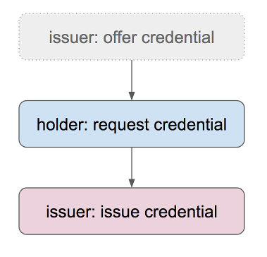

Issue a Credential¶
Indy-SDK Developer Walkthrough #4, Python Edition
[ Java | .NET | Node.js | Objective C ]
Prerequisites¶
Setup your workstation with an indy development virtual machine(VM). See prerequisites. Ensure you have the 64-bit version of Python 3 installed, as the 32-bit version may have problems loading the Indy .dll files.
Steps¶
Step 1¶
In your normal workstation operating system (not the VM), open a Python editor of your choice and paste the code from template.py into a new doc. We will be modifying this code in later steps.
Save the doc as IssueCredential.py.
This is a very simple app framework into which you’ll plug the code you’ll be writing.
Step 2¶
This how-to builds on the work in “Save Schema and Cred Def”. Rather than duplicate our explanation of those steps here, we will simply copy that code as our starting point.
Copy the contents of step2.py into
IssueCredential.py on top of the Step 2 code goes here placeholder comment.
Save the updated version of IssueCredential.py.
Step 3¶
So far, we have created an identity that can be used to issue credentials. We need another one, now, that can be used to hold credentials once they’re issued.
Copy the contents of step3.py into
IssueCredential.py on top of the Step 3 code goes here placeholder comment.
Save the updated version of IssueCredential.py.
Notice that this identity creates something called a link secret (formerly called a master secret; this older term is now deprecated). A link secret is a special piece of data that’s inserted into a credential, in blinded form, on issuance; it is used to prove that the credential in question belongs to a particular holder and not to someone else. Because Alice’s credentials contain her link secret, only she can use them.
Step 4¶
At this point, the issuer and the person who receives the credential (called the holder) engage in an interactive protocol that results in issuance.
First, the issuer offers a credential. This step is optional; we include it for completeness. Next, the holder requests the credential, supplying the blinded link secret that will bind it to them. Finally, the issuer generates the credential and gives it to the holder.

These three steps embody a negotiation pattern that is used in many indy interactions (e.g., in proving). Either party can begin; the other party acknowledges and accepts–or makes a counter proposal. In the case of a counter proposal, a new negotiation cycle begins; in the simpler case, the negotiation is concluded successfully. Negotiation could be used during credential issuance to negotiate a change to a credential (e.g., to correct a typo or to ask an issuer to include or omit a piece of data that they didn’t initially propose); however, we don’t cover that advanced workflow here.
One other note: the sample code in this step uses the word “claim” in places where you might expect “credential.” These used to be synonyms, but usage has evolved in the W3C since the Indy SDK was built. “Credential” is the newer word, and function and parameter names that refer to “claims” are now deprecated. Eventually, all usage will show “credential.”
Copy the contents of step4.py into
IssueCredential.py on top of the Step 4 code goes here placeholder comment.
Save the updated version of IssueCredential.py.
Step 5¶
Run the finished code and observe the whole sequence.
More experiments¶
You might try the “Negotiate a Proof” how-to, which can be done in only one step once you complete this one.